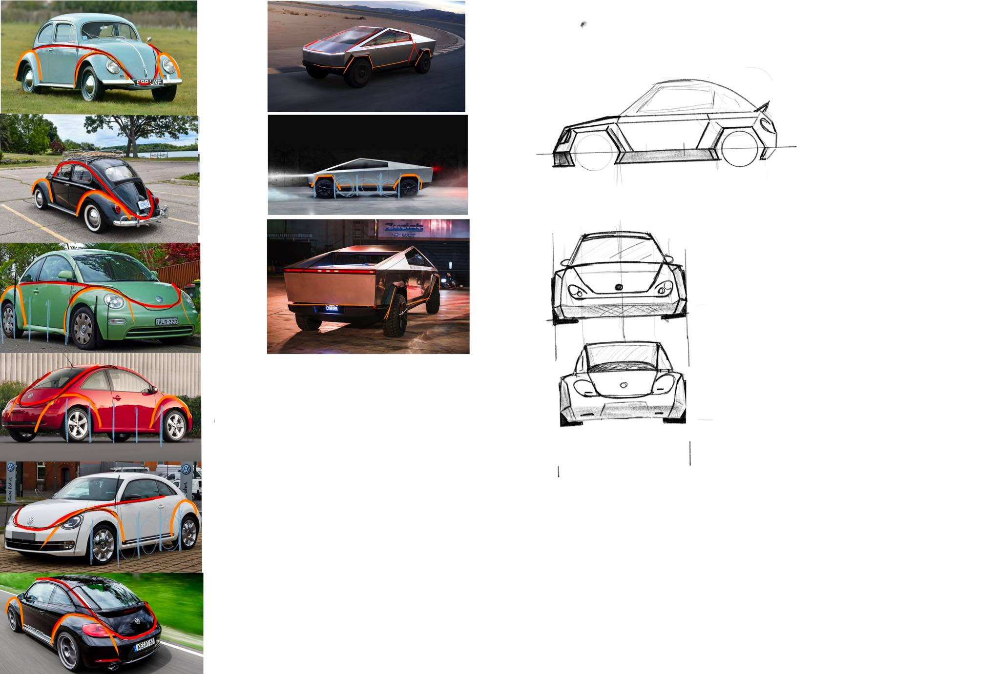
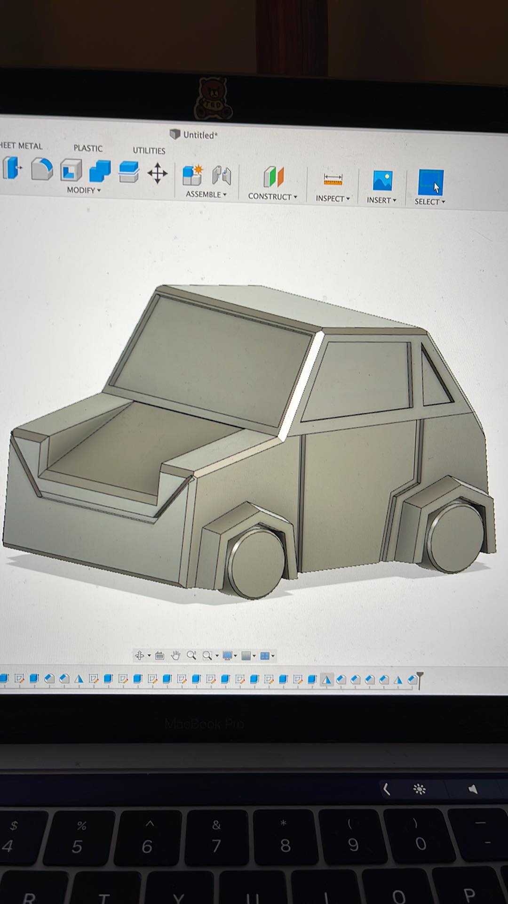
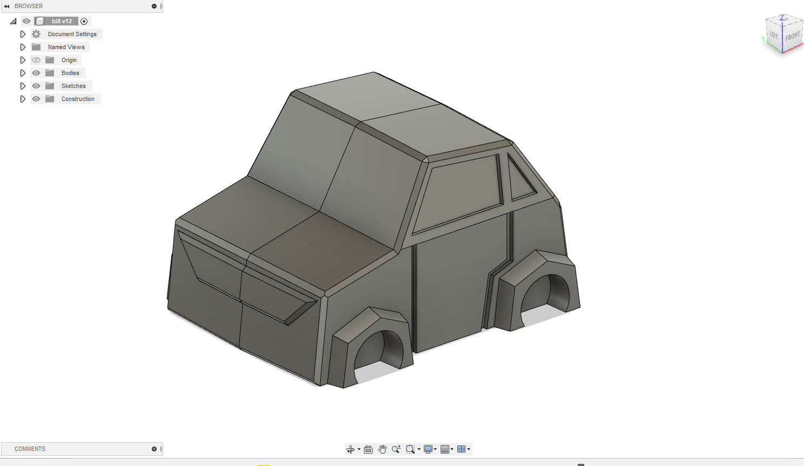
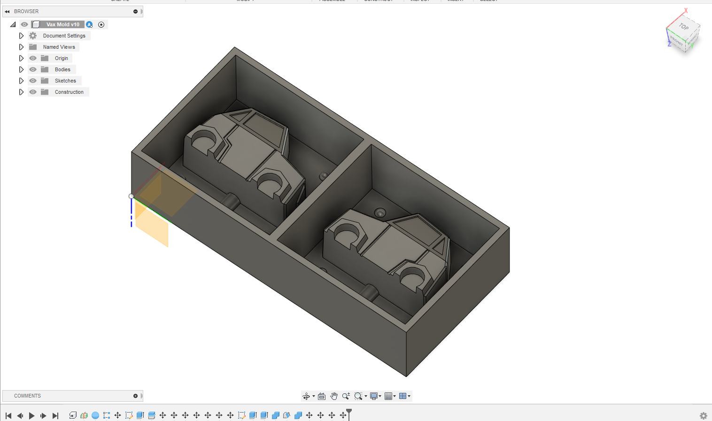

Lokaverkefni
28.3.2022Sem lokaverkefni ákváðum við að fræsa mót í vax. Ég, Atli Tobiasson er rithöfundur þessarar greinar en með mér í hóp eru þeir Friðrik Valur Elíasson og Máni Sakamoto Kolbeinsson (hópur 7). Fyrsta ákvörðunin í verkefninu var að styðjast við skipulagsforritið Trello til að dreifa vinnu verkefnisins á alla og til að gefa okkur skýr markmið sem við getum unnið okkur að.Næst er það að fá góða hugmynd um hvað við ætlum að gera. Ég og Friðrik erum nú að gera hugmyndalista:
- Símahulstur
- Klakabox
- 2.5D spark bíll
- Cybertruck
- Tappi
- Einhvers konar hlutur til að setja á jólatré
- Geymslustöð fyrir síma og heyrnatól
- Módel tekið af netinu
- lyklakippa
Eftir að sofa á þessum hugmyndum ákváðum við að nota Cybertruck hugmyndina með smá breytingu. Hugmyndin okkar er að gera Cyber Beetle. Það er samblanda af Cybertruck og Bjöllu.
Fyrst fór Máni í það að hanna bílinn í Fusion. Hér er texti frá honum um það hvernig hönnunin fór fram:
29.3.2022 - 31.3.2022Þegar komið var að skissa bílinn var fyrst skoðað hönnunarmál bjöllunnar og cybertruck og hvernig þessar tvær hannanir gætu verið settar saman.

- Í appelsínugulu: hjólbogar
- Í rauðu: body línur bílsins
- Í bláu: hjólhaf
Eins og sést eru allar þessar línur til staðar í hverri endurhönnun bjöllunnar svo það er mikilvægt að draga þessar línur í hönnun bílsins.En eins og við komumst fljótt að yrði þetta alltof erfið hönnun að framleiða í móti og þessu var hent útum gluggan fyrir kassabíl sem væri raunverulega hægt að framleiða.
1.4.2022Friðrik og Máni: Teikningin fór fljótar fram þarsem bíllinn var í grunn miklu einfaldari gerð af upprunalegu hönuninni með mjög skörpum línum og einföldum prófilum sem hægt væri að búa til með móti. En að fyrstu var hönnunin of flókin með overhang og hlutum sem gerði það ómögulegt að taka bílinn úr mótinu.

Þetta var lagað fljótt og þetta var lokahönnunin.

2.4.2022Þegar módellið var tilbúið gat Friðrik farið að fikta við mótagerðina. Þar hermdi hann að miklu leyti eftir þeim skrefum sem eru sýnd í eftirfarandi myndbandi:
Þessi myndbönd fylgdu Verkefnalýsingunni (Lokaverkefni partur 1 - Fræsing) og eru frá YouTube rásinni; Fab Lab Akureyri.
Þegar Friðrik var sáttur með sitt framlag lagðist hann aftur í leikjastólinn og starði í meistaraverkið sitt:

6.4.2022Fræsidagur

This work is licensed under a Creative Commons Attribution-ShareAlike 4.0 International License.